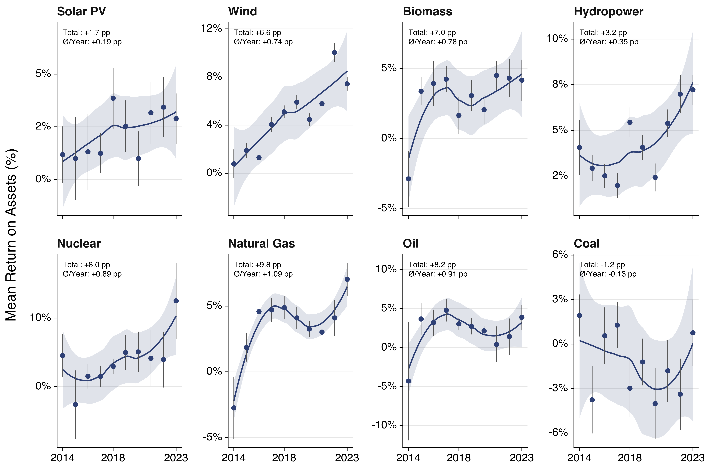
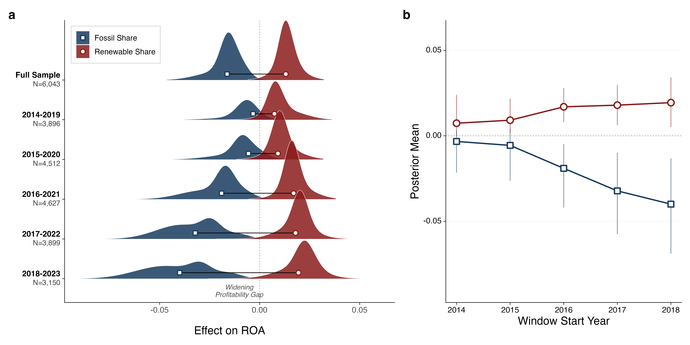
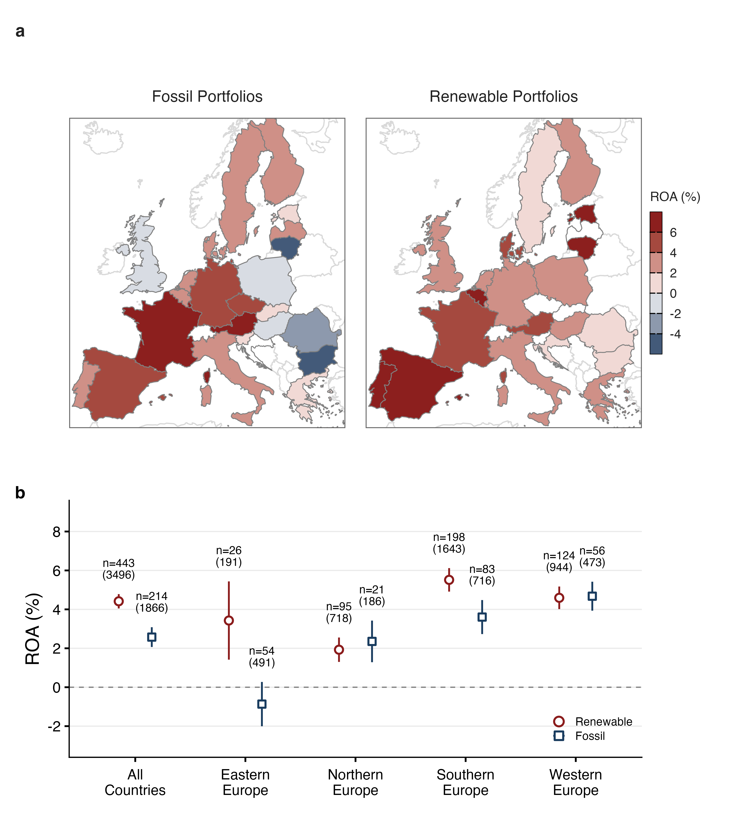

Working Papers
-
Are renewable technologies profitable? Prior research offers thin and mixed evidence. So we built a far larger, longer panel. The answer leans yes.

Fig. 1 — Mean return on assets by energy cluster, 2014–2023.
Fig. 2 — Posterior distributions of the effect on ROA across rolling windows.
Fig. 4 — Regional ROA for fossil and renewable portfolios across Europe.
Selected Talks
-
The 15th RCEA Bayesian Econometrics Workshop